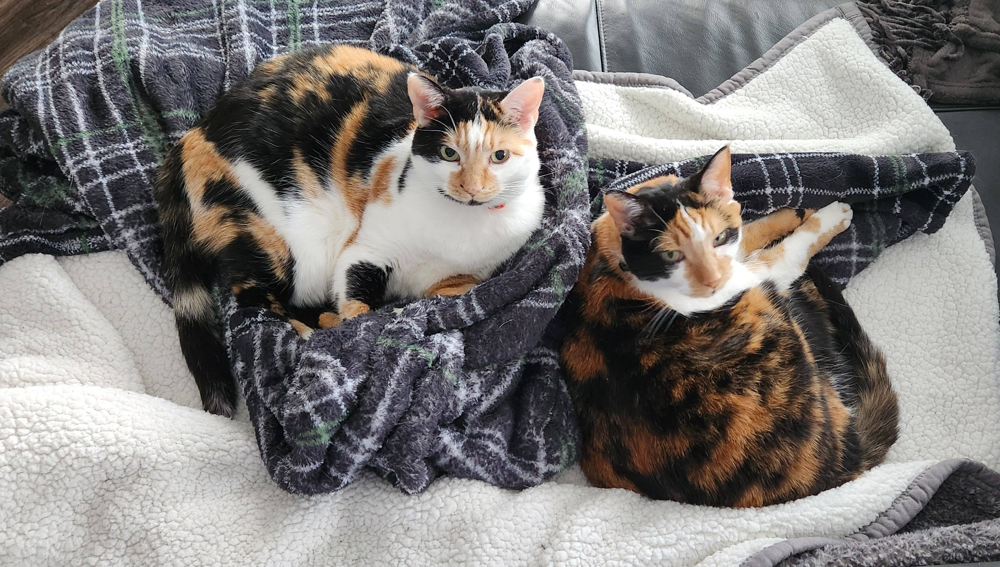

Taka and Tanjin are my two calico cats. Taka is the quiet huntress, while Tanjin could talk your ear off. This year they will celebrate their decade birthday, but they behave as if going on three. Beloved and cherished, they are a joy watching while playing or when asleep. Click on the thumbnails to see more pictures of them!
Taka is full of curiosity and opinion. From stealing shelves to silently judging with side-eye, she’s a force of quiet chaos. Taking on the role of big sister, Taka is a silent, sweet guardian. Click the image to cycle through her moods.
Tanjin is the little sister, and she’s a talker. She loves to play, and she loves to eat. She’s a little diva who loves to be the center of attention. Click the image to cycle through her moods.